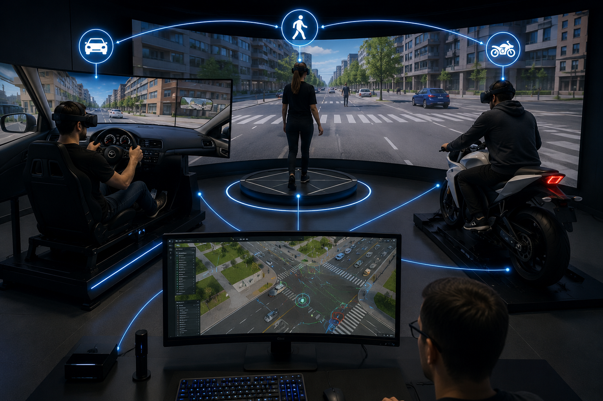

Project overview
Development of a co-simulation architecture (Calvi et al., 2025) based on synchronized virtual environments in which multiple users and intelligent agents can interact simultaneously. This platform enables the study of complex mobility dynamics, mutual interference processes, and behavioural interactions between different categories of road users within immersive and high-fidelity simulation ecosystems. The system integrates virtual reality technologies, network synchronization, behavioural data acquisition, and real-time interaction modelling.
Technologies
Head-Mounted Display (HMD) Simulators
To establish a shared simulation environment, three highly immersive simulation platforms were developed. Together, they enable the investigation of the behaviour of different road users in both collaborative multi-user virtual environments and standalone simulation scenarios, providing a versatile framework for the study of human behaviour, traffic interactions and road safety.
HMD Driving Simulator
Development of a car driving simulation platform focused on the study of driver behaviour, human factors, and transportation safety. The simulator allows the recreation of controlled and repeatable experimental scenarios in which driving performance, decision-making processes, and interaction mechanisms between users, vehicles, and infrastructure systems can be analysed through immersive and data-driven methodologies.
HMD Motorcyclist Simualtor
Development of an immersive motorcycle riding simulator designed for the analysis of rider behaviour, risk perception, and interaction dynamics within complex traffic scenarios. The simulator integrates physical riding controls with virtual environments developed through advanced simulation technologies, enabling the investigation of behavioural responses under different road safety conditions, including interactions with vulnerable road users and critical traffic situations.
HMD Pedestrian Simulator
Development of an immersive pedestrian simulation platform aimed at analysing pedestrian behaviour, crossing decision-making processes, and interaction dynamics within urban traffic environments. The simulator enables the study of user perception, gap acceptance behaviour, and safety-related responses under controlled and repeatable experimental conditions. By integrating virtual reality technologies, behavioural data collection, and realistic traffic scenarios, the platform supports the investigation of interactions between pedestrians, vehicles, and surrounding infrastructure systems within highly immersive environments.